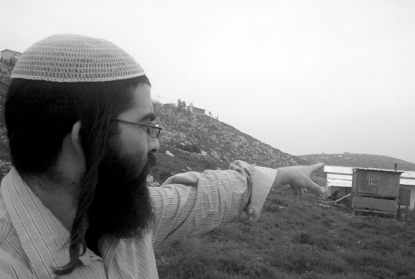

The Extreme Left Is Bringing the Third Intifada
While the headlines continue to follow the tension in Yehuda and Shomron as things heat up throughout the region, the settlement leaders are preparing for any possible scenario, including an escalation of violence, requiring an appropriate response. Naturally, they hope that all these incidents will stop and pray for a cessation of hostilities. In the meantime, however, extremist left-wing activists encourage local conflicts, inciting the Arabs and creating an atmosphere of complete anarchy. In an interview with Beis Moshiach, journalist Avraham Binyamin, spokesman for the Yitzhar settlement, speaks about this raging battle alongside the equally ruthless onslaught by the government-sponsored media.
Translated by Michoel Leib Dobry

With the headlines blaring on the increasingly hostile atmosphere in Yehuda and Shomron and the growing concern for the outbreak of a new Arab uprising, the residents of the Jewish settlements are in a state of high alert, as they follow each new incident of violence with great apprehension. In recent weeks, they have begun to feel the tension, as young Arabs take full advantage of the fragile security situation with endless acts of hostility against the settlers.
Are the settlers experiencing this in their daily lives or are we only talking about things that occur on a more general level?
In recent months, we have been witness to a sharp increase in the number of security threats around the settlements. This pertains to the very safety of local residents, starting with throwing rocks, tossing Molotov cocktails onto the highways, and other incidents in the general vicinity. Thank G-d, in most cases, the incident results only in property damage or light injuries. We hope that things get no worse than that. Each day that passes without serious injury is literally a miracle.
Of course, we don’t hear about such incidents in the media, as they prefer to ignore the situation here. You can see the facts on the General Security Services’ website, which publicizes monthly reports on what’s going on in Yehuda and Shomron. Evidence clearly shows that there has recently been a sharp increase in violence throughout the region. We can feel how these events are bringing us back to the atmosphere that reigned during the second intifada twelve years ago. In recent weeks, we have seen mass demonstrations by hundreds and thousands of Arab rioters in Chevron and the Arab villages surrounding our settlements. In general, the feeling is that the Arabs are trying to rise up again and generate another intifada. We must understand that throwing rocks is also considered an act of terrorism in every respect, placing innocent lives at grave risk.
Nevertheless, why haven’t these incidents developed into something far more serious?
We literally see miracles, as we face this most dangerous situation. Reports come in each day on incidents that miraculously end without anyone getting hurt. There have also been numerous attacks on the Israel Defense Forces, which are naturally better protected. For example, there were cases of rock throwing on army patrols in various areas, including Otef Yerushalayim and near Kever Rachel.
Recently, terrorists were captured at a checkpoint near Kfar Tapuach, in possession of seven explosive devices, a pistol, and a knife. It turns out that they were on their way to set off an explosion somewhere in the central part of the country. Thanks to the alertness of the soldiers on duty, they were caught during a routine security check.
This growing danger also poses a real problem for settlers traveling by vehicle. People driving between home and work regularly encounter rock-throwing or rioting. There is also more local rampaging, such as on the settlement of Aish Kodesh, located near Shilo. For the past several months, its residents have been under relentless attacks by Arabs, who come to the yishuv and destroy property. Fortunately, the situation there thus far has resulted only in property damage and minor injuries. However, the danger continues to grow. The Arabs are constantly testing the limits, yet the defense forces won’t act.
What does that mean – ‘they won’t act’? Isn’t there any response to the wave of violence?
When a common citizen, with no awareness with the security situation, gets caught in an ambush of rock throwers, he’ll call the military command center, report the incident, but no more than that. For its part, the army arrives at the scene, combs the area for suspects, and even sometimes arrests the perpetrators – but no overall response is ordered. The job of the commanding officer is to restore calm and not give too much attention to such occurrences. They deal with each case separately, as if it was merely an isolated incident. There is no general response or even an effort to try and stop the wave of violence.
Have you tried to speak with the local military authorities?
Of course we have. We are in constant contact with the army, but they simply choose to ignore the pleas of the local Jewish residents. The high-ranking military echelon ties the hands of the senior officers in the field. The regional commander takes a position dictated by the leftist political ideology that guides him. It seems that he operates with a determination to maintain a semblance of tranquility. Naturally, this leads to more far-reaching consequences.
The settlement of Yitzhar was recently in the headlines over the violent incidents instigated by nearby Arabs. Do you claim that they are scheming against you?
In recent months, there have been incidents every week, as teenage Arabs from the nearby village go home after school in the direction of the Yitzhar outposts and try to create a riot. They attempt to set fires, damage property, and enter the settlement grounds. And what has the army chosen to do to combat this phenomenon? It comes in force and destroys the outpost. According to their line of thinking, this will calm things down. However, nothing changes as a result. The outpost has been destroyed twice already, yet the Arab youths continue their provocations – and matters have only gotten worse since then. Located near this hill are thousands of tear gas canisters for soldiers to use against rioters. Of course, none of this does any good. When several hundred Arabs come and the army fires tear gas at them, this simply has no effect. The Arabs just take the grenades and throw them back at the soldiers.
Two months ago, Israeli and foreign left-wing activists created a very provocative incident. They made a tree-planting ritual close to Yitzhar, together with Arab residents from the nearby villages. Since we have a group of local settlers who follow leftist activities in the social media, we knew about this event several weeks in advance. Together with deputy council head Yossi Dagan, we turned to the military authorities and the regional police commander for the purpose of stopping this ceremony in its tracks. The army chose not to take this step, and as expected, dozens of activists, including some from overseas, arrived with a few saplings for the sole purpose of putting on a show for the cameras. The entire ritual was meant to be an act of incitement and assault on the local Jewish settlers.
All these episodes eventually lead to a “cat and mouse” game between the army and the Arab rioters. All this could be easily handled in a quite different manner, if only the IDF would decide to put an end to such occurrences from the very start. This whole situation began with the well-publicized incident at the village of Kadum, where Israeli soldiers fled from the Arab rabble due to problematic orders on opening fire, compelling them to retreat, not react.
During the snowstorm this past winter, when about two hundred Arabs headed towards the settlement outpost, the Jewish residents came on the scene and drove them away. The army only arrived much later to take control of the situation. This is our reality today. Since the Arabs know that the IDF will not fight to the end, they continue sowing unrest and making disturbances. What’s happening in the hills near Yitzhar is one continuous battle. Each week, there’s another skirmish between the Arabs storming in from one of their villages and the army handling each clash with kid gloves, instead of dealing with the problem – once and for all.
Based on your description, it sounds like the IDF arrives at the scene of violence and deals with the situation. What exactly do you expect the army to do that it is not doing now?
We are calling for the immediate arrest of all those spurring the Arabs to commit acts of violence. But above all, we want court orders issued against these provocateurs, preventing them from entering Yehuda and Shomron. This is “a handful of militant anarchists,” which comes from overseas to create turmoil. The steps we demand include their removal from the region and a halt to their incitement. There are enough tools available to apply the rule of law to these agitators. However, the regional military commander only uses these tactics against the settlers, who are suspected of taking action against the dismantling of the outposts. The army arranges for expulsion and eviction orders against Jews, without establishing any proof of probable guilt. In contrast, while there is more than sufficient evidence to warrant arrest and prosecution of the Arab lawbreakers, the IDF wrings its hands and does nothing.
Against the rioters, the army has thus far used only tear gas grenades – defined as a means of dispersing protestors – despite the fact that such incidents actually require a much harsher response. To our great regret, the IDF ties its own hands by using methods only designed to break up demonstrations, while ignoring the fact that these activists come to cause property and physical damage. When someone throws a rock or a Molotov cocktail, this is an act of terrorism. Yet, even in such circumstances, the soldiers’ hands are tied and they are forced to act as if these are just innocent demonstrators.
Last summer, you suffered from repeated cases of arsons. Are you concerned about what will happen during the coming summer?
I believe that they’ll start lighting fires again this summer as they’ve done for the last four years. Every summer, the Arabs set the surrounding agricultural fields ablaze, as part of a deliberate effort to burn down settlement homes and possibly cause bodily harm (G-d forbid) to the local residents. In one instance, the fire literally reached a row of houses, and we were forced to evacuate an entire neighborhood. The Arabs’ usual tactics are to set fires on Friday, close to the onset of Shabbos, or on Shabbos itself, thinking that we will be forbidden to extinguish the blaze. Naturally, we act according to Shulchan Aruch, Sec. 329, and the halachic rulings of local rabbanim, and we put out the fires, even on Shabbos. However, this tends to detract from the holy day of rest.
On the other hand, we also perceive such events in a more positive light. Nothing warms the Jewish heart more than watching an entire settlement join forces to save families whose homes are in danger. We see here a most impressive expression of mutual assistance steeped in Torah values. Even on a Friday afternoon, in the middle of all the Shabbos preparations and giving baths to the children, the whole yishuv came out to douse the flames, in order that the fires shouldn’t cause damage to their neighbors’ houses.
Do you have plans to take preventive measures to stop the continuation of such incidents?
This depends upon the restrictions placed on the settlement’s ability to take official and approved action in the surrounding area. There are plans to pave a kind of “fire lane” near the yishuv, but this can only prevent the flames from spreading, not stop them completely. I can safely say that the residents of Yitzhar are not used to being just in a defense posture. They also know how to rise up and protect themselves, and the neighboring Arabs take this into account.
Why does the IDF tie its own hands?
In recent years, the extremist left-wing organization, B’Tselem, has set up a whole system of hidden cameras to record all clashes with IDF forces. After each incident, they edit the film to serve their own purposes, causing serious harm to the image of the Israeli soldier. On numerous occasions, the whole episode is taken completely out of context, thereby potentially creating an international scandal.
Our response to this is a ‘counter-system’ of cameras, which has recently been put in operation with the special assistance of the Tatzpit news agency. Even in Yitzhar, we run a camera system when volatile incidents occur, as we try to provide our own answers with the limited powers available to us. For example, two years ago, the settlement cameras recorded a B’Tselem photographer picking up a rock during a planting ceremony and throwing it towards the IDF soldiers. The film illustrated the fact that this is an organization that cooperates with the terrorists. When foreign activists arrived and saw the strange cameras, they became startled and acted quite differently. For their part, the soldiers were very happy to see our cameras in place. It gave them a feeling of security to take necessary action without the fear that extremist left-wing cameramen will later present a distorted picture.
Last year, a clash occurred near the settlement, and the local “rapid response team” had to deal with a situation where lives would be at risk. After they were forced to open fire, the IDF impounded the team’s weapons, and the media portrayed the entire incident in totally erroneous terms. It was only due to our cameras being in place that we were able to present the facts correctly, and two weeks later, the weapons were returned to their rightful owners.
In recent months, the court case against the settlement activists accused of espionage was brought to a conclusion. How did this struggle progress?
These are activists who took part last winter in efforts to stop the dismantling of outposts throughout Yehuda and Shomron. Various activities began to take shape, and even Knesset Members and Cabinet ministers were partners in reporting any suspicious mobilization of IDF forces around the settlements, thereby removing the possibility of surprising local residents in the middle of the night to destroy their homes. These operations aroused a powerful response from the army and the police, because the activists had succeeded in preventing further outpost dismantling. In most cases, the army was forced to postpone their plans, at least until they could properly reorganize their forces.
The response was swift and harsh. The police arrested the activists, while the army and the General Security Services went on a rampage, as they demanded that they should be tried for espionage, no less. However, once the police realized that it would be impossible to file such charges, they found a legally binding clause dating back to the era of the British Mandate. It declared in the name of the King of England that it was forbidden to gather intelligence on military activities. This clause was implemented for the first time since the establishment of the state of Israel for the purpose of prosecuting the settlers. At the end of the legal process, a plea bargain was made between the police and the accused, bringing the affair to an end. Regrettably, some of the defendants are now preparing for several months of imprisonment, while others were sentenced to community service.
Throughout this period, the yishuv members helped the defendants, whose livelihood and freedom had been seriously harmed. However, the families had accepted the entire burden of the criminal trial upon themselves. This included the loss of personal liberties, lengthy imprisonments, and interminable periods of house arrest. These are fathers of young children, who were forced to deal with unprecedented harassment and maltreatment, often living in isolation from their homes and families.
The activists received support from a wide range of sectors and communities who are faithful to the cause of Eretz Yisroel, far more than just from the nearby settlements.
Last week, it was reported that the prime minister is soon expected to proclaim another construction freeze. Aren’t you still recovering from the aftereffects of the previous freeze?
Regardless of the freeze, the entire settlement movement has grown during the past years in a most astonishing manner. During the period that preceded the freeze, thousands of construction projects had been initiated, and new homes were subsequently built despite the government edict. Furthermore, many settlements found a number of creative ways to bypass the freeze and continue building. For example, several yishuvim placed buckets of cements in select locations when the air force was taking aerial photos of the starting construction projects. As a result, they concluded that these were approved building programs, and work could continue without restrictions.
Despite the difficulties, we were always able to sidestep the decree and keep on building. I personally live on a hill near Yitzhar, and I built my house during the construction freeze. While no cement mixers dared to come to the site, we managed to circumvent the problem and finish work on our home. One positive aspect was how the battle against the construction freeze remained steadfast and unwavering. Ironically, those settlements not known for their fierce ideological stance were particularly resolute in their struggle against the freeze. I can safely say that the building freeze has not dimmed the enthusiasm in Yehuda and Shomron, and the construction will continue despite the new government’s pronouncements.
Commentators suggest that the political covenant between Naftali Bennett (Bayit HaYehudi) and Yair Lapid (Yesh Atid) will endanger the future of these yishuvim, since it will eventually cause the ultra-Orthodox parties to become the natural supporters of uprooting the settlements.
Regrettably, there are parts of the national religious community that don’t feel enough of a connection to the ultra-Orthodox sector. Here in Yitzhar, things are quite different. We believe that the common link among all Jews faithful to G-d and His Torah must be strengthened. We feel a powerful connection to ultra-Orthodox Jewry and have great reverence for all Torah scholars. It is important that the public discussion over compulsory military service should be sincere and respectful, while getting to the heart of the matter. We must seek a real solution that will bestow proper honor to the world of Torah and provide an appropriate response to the need for more widespread participation in the nation’s defense. However, if the debate becomes filled with hatred and antagonism, as we have seen in recent months, both sides will continue to pay a heavy price.
While such calls for mutual respect are being heard from many people in the national religious community, regrettably, we aren’t hearing them enough. We are concerned about the growing atmosphere of hostility, and we pray that G-d should serve as a beacon for the relevant parties in this discussion, who might be inclined to turn this issue into a tragic battle for vengeance. Eretz Yisroel doesn’t just belong to the settlers, just as the world of Torah is not the exclusive birthright of the ultra-Orthodox. Each of these communities has a profound responsibility to bear both flags, and it is forbidden to raise one at the expense of the other.
Are you concerned about Obama’s upcoming visit to Eretz Yisroel?
As do all good Jews, we believe that “the heart of kings [is] in the Hand of G-d.” This verse is not just a slogan, rather a guiding principle that our lives must follow. We act with complete faith, and this naturally includes our persistent efforts on the more practical and political fronts. We are confidently preparing for all possible scenarios, and we believe that we will merit to do our utmost, working together to preserve the integrity of Eretz Yisroel, to enhance the prestige of the Torah, and to perfect the world under the sovereignty of Alm-ghty G-d.
Sholom Ber Crombie. "The Extreme Left Is Bringing the Third Intifada." Beis Moshiach, no. 874 (March 21, 2013).